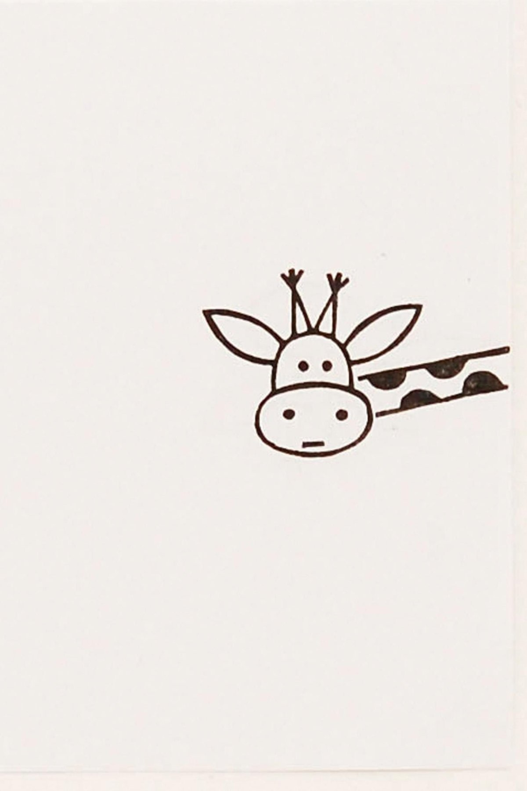

Це приклад тексту, котрий обтікає зображення. Зображення буде с ліва. Жираф – це на і граціозна тварина з довгою шиєю, яка живе в Африці. Це найвища тварина на Землі. Його висота може бути більше ніж 5 метрів! Жираф має дуже довгу шию, завдяки якій він дістає листя на верхівках високих дерев. Жираф любить їсти листя з дерев, особливо акації. У жирафів дуже дуже симптичні морди з великими очима і довгими вушками.
Тут буде продовження тексту, котрий обтікає зображення. Попри на свою велич, жираф може бути досить швидким і рухатися зі швидкістю до 55 км/год. Жирафи часто живуть у великих стадах, що допомагає їм відчувати себе безпечніше. Кожна тварина має свої, часом кумедні, особливості. Ось і подивившись на жирафа, мимоволі посміхаєшся. Це ссавець, парнокопитна тварина, яку знають всі люди на планеті. Жирафи неймовірно високі, їх зріст сягає 6 метрів. Тому це найвищі наземні тварини на нашій планеті. Характерна особливість жирафа – його неймовірно довга шия. Вона становить третю частину довжини всього тіла. Великий зріст і довга шия дають змогу тварині діставати собі їжу з високих дерев. Користуються вони при цьому своїм довгим м’язистим язиком. Цей орган досягає майже півметрової довжини. Важать жирафи теж багато – близько 1 тонни.
Шерсть тварини має своєрідне, красиве забарвлення – темні плями на світлому жовтому фоні. У кожного жирафа малюнок індивідуальний, і є неповторним. На голові у тварини два ріжки, обтягнуті шкірою. Великі очі виразні, відтінені довгими віями. Поруч з ріжками розташовані вушка. На шиї росте грива. Є хвіст з пензликом. Ноги у жирафів теж довгі і тонкі. Але це не заважає їм швидко бігати і досягати швидкості 60 км /год. Відрізняються тварини спритністю і стрибучістю. Їх стрибок може досягати 1,5 м висоти. В їжу, жирафи вживають рослинність – акацію, пагони абрикоса, мімозу. Якщо тварини довгий час харчуються соковитими листям, то вони можуть обходитися без води. Але, на водопої ссавець може за один раз випити 38 літрів води відразу.